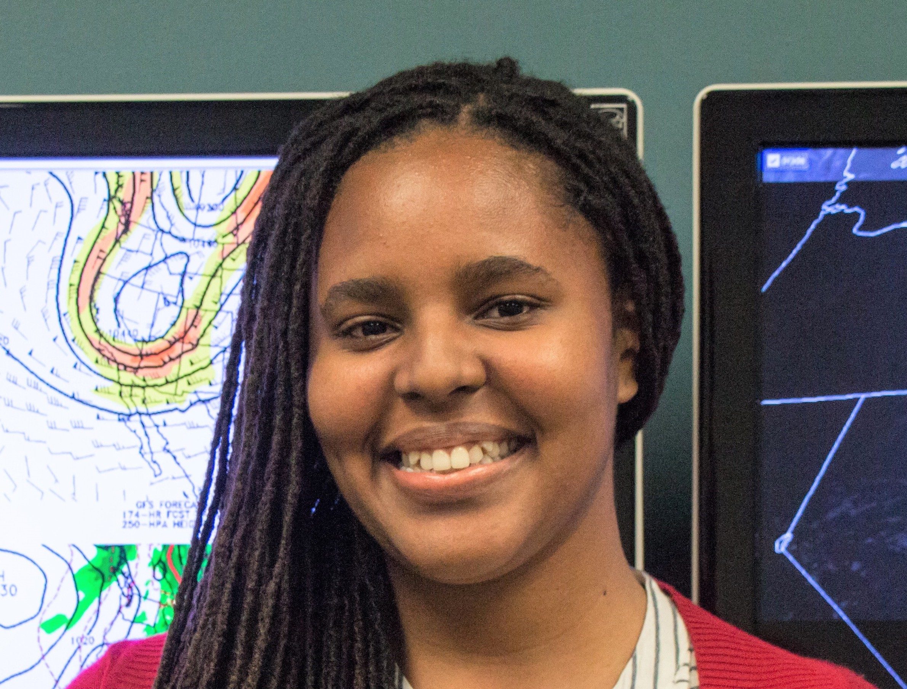
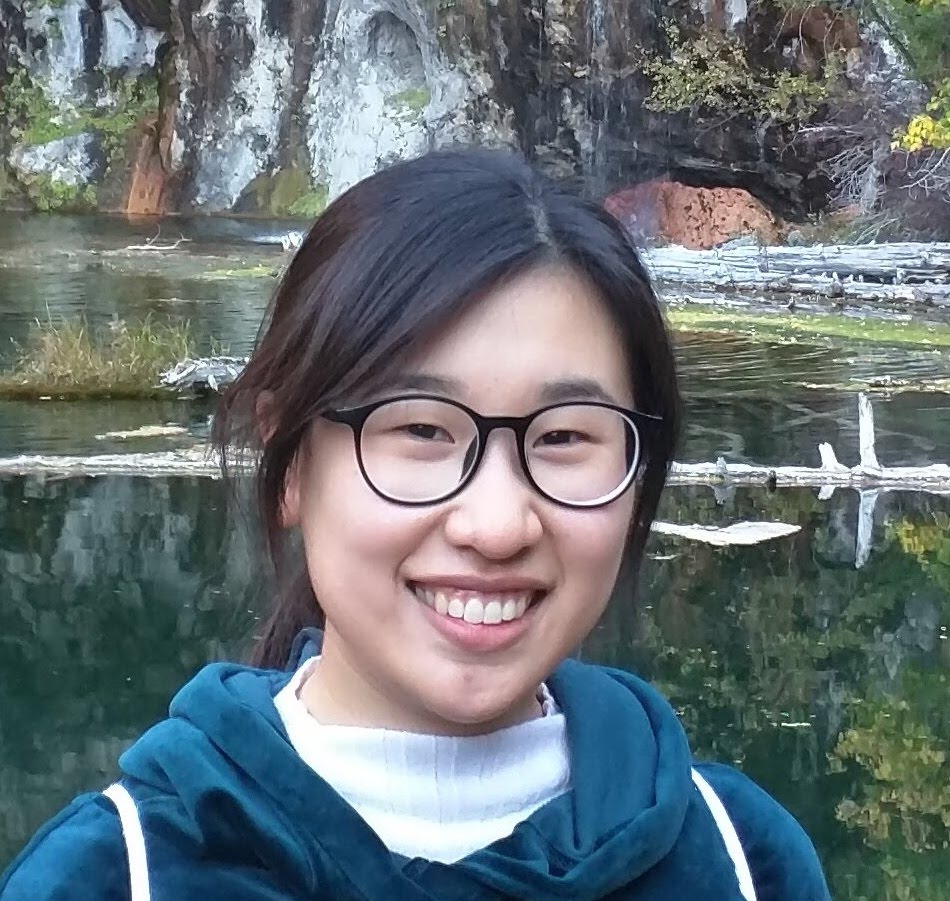

The Bell Research Group

Michael Bell
Michael is an associate professor and the principal investigator of Bell's Research Group. He obtained his Ph.D. from the Naval Postgraduate School and joined the CSU Faculty in 2016.

Phil Klotzbach
Phil Klotzbach is a Research Scientist III. Phil's primary research interests are in intra-seasonal and seasonal forecasts of Atlantic hurricane activity. He has been an author on the Atlantic basin seasonal forecasts at Colorado State University since 2001 and took over as lead author in 2006. He also studies the impacts of climate change on hurricane activity. Phil engages actively with the general public via his Twitter feed (@philklotzbach) as well as conducting hundreds of media interviews throughout the course of the year. In his spare time, Phil enjoys running, cycling and hiking. He has climbed all 54 14,000 foot peaks in Colorado and has thru-hiked the 2100+ mile Appalachian Trail.

Dandan Tao
Dandan is a Research Scientist at Colorado State University, working with Prof. Michael Bell and Prof. Peter Jan van Leeuwen. Her research interests are all about tropical cyclones.

Jen DeHart
Jen obtained her Ph.D. from the University of Washington and is a Post-Doc researcher. Jen's current research uses polarimetric radar data to understand the processes controlling tropical cyclone precipitation intensity and duration. Her other research interests include the effects of vertical wind shear and passage over complex terrain on TC precipitation processes.

Jonathan Martinez
Jon obtained his M.S. from the University of Hawaii and is currently a Ph.D. candidate. His research focuses on understanding the mesoscale structure and evolution of tropical cyclones. This research is carried out by examining high-resolution observational data and numerical simulations with the goal of elucidating the dynamical mechanisms contributing to tropical cyclone intensification.

Chaehyeon Chelsea Nam
Chelsea is a Ph.D. candidate, studying tropical cyclone (TC) development with Radar data and regional numerical models. During her master’s in Seoul National University at South Korea, she researched TC risk in climatological perspective. Her research interests are towards 1) better understanding the multi-scale thermodynamic and dynamics interactions in TC genesis and intensification and 2) improving forecasting of extreme weather impacts from TCs.

Jhordanne Jones
Jhordanne is a Ph.D. candidate, studying the large-scale and synoptic tropical environment and its influence on seasonal tropical cyclone activity with a focus on improving forecast prediction. She received her Masters in Physics (with a specialization in Climate Physics) at the University of the West Indies, Mona, Jamaica. Her research interests are tropical meteorology, tropical cyclones, seasonal tropical cyclone prediction and climate variability.

Naufal Razin
Naufal is a first year Ph.D. student, researching the use of satellite microwave observations to improve hurricance intensity forecasts. His Master’s research involved analyzing the role of rainband stratiform precipitation in the unconventional eyewall replacement cycle of Hurricane Ophelia (2005) using airborne radar observations.

Benjamin Trabing
Ben is a PhD student, studying multi-scale interactions involved in tropical cyclone intensity change. He received his M.S. in atmospheric science from CSU in 2018 and a bachelors in meteorology and a minor in mathematics from OU in 2016. During his undergrad, Ben spent time working for the National Severe Storms Laboratory in Norman, OK and the Cooperative Institute for Research in the Atmosphere in Fort Collins, CO. He has done prior research on the potential use of lightning in forecasting intensity changes in hurricanes.

Eleanor Casas
Eleanor Casas is a Ph.D. candidate, and she is researching the tropical cyclone boundary layer (TCBL) and its relationship to TC intensification processes. Prior to attending Colorado State University, Eleanor received her Bachelor of Science in Meteorology from Valparaiso University where she researched lake-effect snow, and she began her graduate studies with Dr. Michael Bell at the University of Hawaii at Manoa. Her Master's of Atmospheric Science from Colorado State University identified a simplified logistic growth equation framework that relates the surface drag coefficient to TCBL structure and short-term TC intensification potential, and Eleanor is interested in expanding the applicability of this framework. Additionally, Eleanor is also interested in investigating several processes that influence TC rapid intensification, and she prefers to use a combination of observations, numerical modeling, and theory to address her research questions.

Ting-Yu Cha
Ting-Yu is a Ph.D. student researching radar analysis techniques. She obtained her B.S. from National Taiwan University and M.S. from CSU in 2018.

Rung Panasawatwong
Rung is a Ph.D. student also working with Dr. Kristen Rasmussen. She is interested in the intra-seasonal variability of the factors that cause extreme precipitation events.

Chandra Pasillas
Chandra is a Ph.D. student also working with Dr. Chris Kummerow.

Alex DesRosiers
Alex is a second year M.S. student at Colorado State University. His current research aims to identify internal mechanisms driving rapid intensification in recent Atlantic storms. In situ data such as the NOAA P-3 Tail Doppler Radar will be used to capture these mechanisms. This research also incorporates machine learning techniques to lessen the time and effort it takes to quality control radar data. The end goal is a better understanding of how rapid intensity changes occur in order to provide more information for modelers and forecasters.
Ali is a master's student researching mechanisms of heavy rainfall. She graduated from Arizona State University with a B.S. in both computational math and meteorology-climatology.
Kate Young
Kate is a research associate. She joined our group in 2020.
Brianna Lund
Brianna is a research associate. She is working for the Bell Research Group and the van den Heever Research Group.Group Alumni
Ya-Chien Feng
Postdoc from 2017 to 2019
Current Affilation: ASP Postdoc at National Center for Atmospheric Research (NCAR)
Bonnie Brown
Postdoc from 2014 to 2016
Program Coordinator at NOAA/OAR/Off. of Weather and Air Quality
Annette Foerster
Ph.D. in 2017
Thesis: Radar-derived Thermodynamic Structure of a Major Hurricane in Vertical Wind Shear
Current Affiliation: ITGAIN Consulting Gesellschaft für IT-Beratung mbH
Andrew Frambach
M.S. in 2015
Thesis: Dual-polarization Radar Characteristics of Convection in Hawaii during HERO
Current Affiliation: Center for Severe Weather Research, Boulder, CO
Shannon McElhinney
M.S. in 2014
Thesis: Observations of Supergradient Winds in the Tropical Cyclone Boundary Layer
Current Affiliation: Geophysical Fluid Dynamics Laboratory, Princeton, NJ